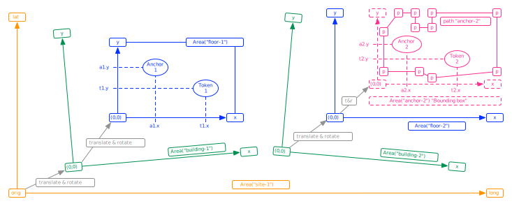

A private REST/JSON API for access to data generated by the Sostark TokenMe system.
This is required.
Some informative introductory text.
 View image in seperate window: Sostark-SUM4-API-design-v1.0-zoom.svg
[Exposed=Window]
interface Foo {
attribute DOMString bar;
undefined doTheFoo();
};
The Foo interface represents a {{Foo}}.
The doTheFoo() method does the foo. Call it by running {{Foo/doTheFoo()}}.
This is required for specifications that contain normative material.